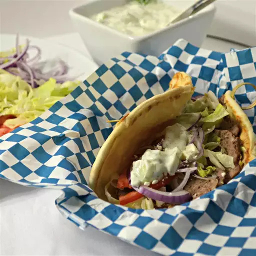

Traditional Gyros

Make a Greek gyro sandwich at home with this recipe that I absolutely love!
Ingredients
- 1 small onion, cut into chunks
- 1 pound ground lamb
- 1 pound ground beef
- 1 teaspoon freshly ground black pepper
- 12 pita bread rounds
- 1 large red onion, sliced
- 6 ounces crumbled feta cheese
- 24 tablespoons tzatziki sauce
- 12 tablespoons hummus
- 1 teaspoon dried marjoram
Steps
- Place onion in a food processor and finely chop. Transfer onion to a piece of cheesecloth and squeeze out the liquid. Place onion in a large bowl
- Mix lamb, beef, garlic, oregano, cumin, marjoram, thyme, rosemary, black pepper, and salt with the onion using your hands until well mixed. Cover bowl with plastic wrap and refrigerate until flavors blend, about 2 hours
- Place meat mixture in a food processor and pulse until finely chopped and tacky, about 1 minute. Pack meat mixture into a 7x4-inch loaf pan, ensuring there are no air pockets. Place the loaf pan into a roasting pan and pour enough boiling water around the loaf pan to reach halfway up the sides for a water bath
- Bake in the preheated oven until no longer pink in the center, 45 to 60 minutes. An instant-read thermometer inserted into the center should read at least 165 degrees F (74 degrees C). Pour off any accumulated fat and cool slightly
- Thinly slice the cooked gyro meat loaf
- Spread 1 tablespoon hummus onto each pita bread. Then top each with some of the gyro meat slices, shredded lettuce, tomato slices, red onion slices, feta cheese crumbles, and 2 tablespoons tzatziki sauce to complete each sandwich